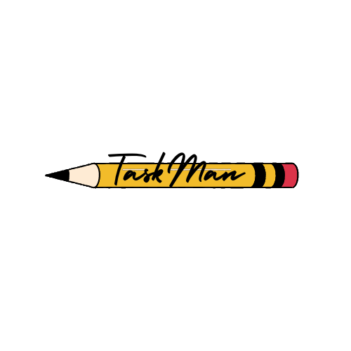

<header>
	
	
<div class="dropdown">
	<button class="dropbtn">User</button>
	<div class="dropdown-content">
		<!-- delete all lists and task -->
		<a (click)="reDirect()">Delete Everything</a>
	  <a routerLink="/login" routerLinkActive="active">Login</a>
	  <a (click)="logout()">Logout</a>
	</div>
  </div>

</header>

